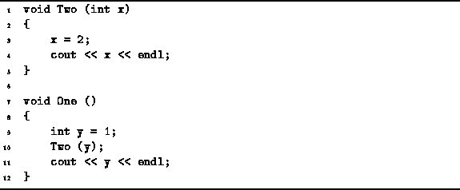

Data Structures and Algorithms
with Object-Oriented Design Patterns in C++
Data Structures and Algorithms
with Object-Oriented Design Patterns in C++
Consider a pair of C++ functions defined in Program  .
The function One calls the function Two.
In general, every function call includes a (possibly empty) list of arguments.
The arguments specified in a function call are called
actual parameters .
In this case, there is only one actual parameter--y.
.
The function One calls the function Two.
In general, every function call includes a (possibly empty) list of arguments.
The arguments specified in a function call are called
actual parameters .
In this case, there is only one actual parameter--y.

Program: Example of Pass-By-Value Parameter Passing
The method by which the parameter is passed to a function is determined
by the function definition.
In this case, the function Two is defined as accepting
a single argument of type int called x.
The arguments which appear in a function definition are called
formal parameters .
If the type of a formal parameter is not a reference
(see Section ),
then the parameter passing method is pass-by-value.
The semantics of pass-by-value work like this: The effect of the formal parameter definition is to create a local variable of the specified type in the given function. E.g., the function Two has a local variable of type int called x. When the function is called, the values (r-values) of the actual parameters are used to initialize the formal parameters before the body of the function is executed.
Since the formal parameters give rise to local variables,
if a new value is assigned to a formal parameter,
that value has no effect on the actual parameters.
Therefore, the output obtained produced by the function One
defined in Program is:
2 1
 Copyright © 1997 by Bruno R. Preiss, P.Eng. All rights reserved.
Copyright © 1997 by Bruno R. Preiss, P.Eng. All rights reserved.